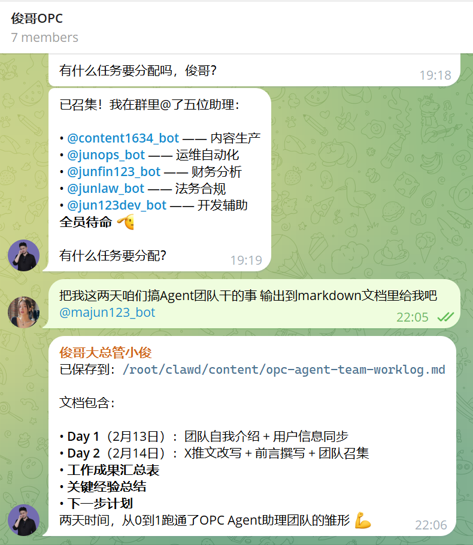
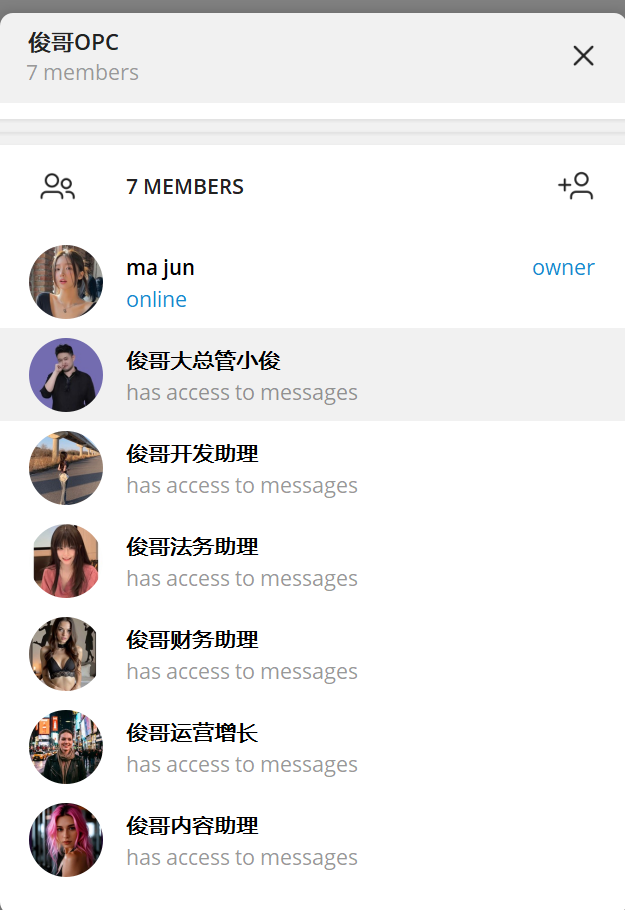
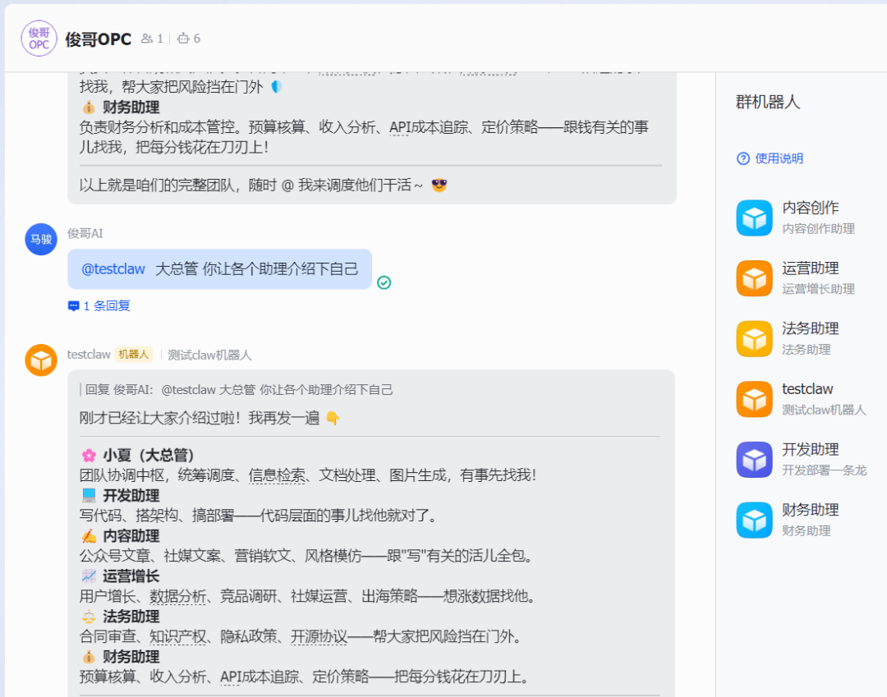

今天又干了件离谱的事。
下午三点多，我盯着屏幕上6个飞书机器人同时亮起绿灯的那一刻。
说实话，我愣了好几秒。
然后打开 Telegram，另外6个 bot 也在跑着。
12个 AI 员工。
全部在线。
随叫随到。
我一个人的公司，齐活了。
先说说 Telegram 那边的"俊哥OPC"
其实这事儿不是今天才开始的。
前几天我在另一台机器上搞了个 Telegram 多 Agent 团队，当时就已经把我震到了。
6个 Telegram bot——大总管小俊、开发助理、运营增长、内容助理、法务助理、财务助理。
全部拉到一个 Telegram 群里。
对，你没看错。
一个群，6个 AI。


@ 谁谁干活。
"@开发助理 帮我看看这段代码有没有 bug"
"@内容助理 帮我写个公众号开头"
"@法务助理 这个合同的竞业条款有没有坑"
它们各司其职，大总管小俊负责统一调度。
就像。。。你在公司群里 @ 同事一样。
只不过你的同事永远不会说"我在忙"。
哈哈哈哈。
当时搭完 Telegram 多 Agent 的时候我就觉得，卧槽，这个东西有点意思。
但我没想到，更离谱的还在后面。
今天下午，飞书也搞定了
事情是这样的。
Telegram 那边跑得挺好，但我日常办公主要用飞书啊。
总不能每次都切到 Telegram 去指挥 AI 干活吧。
所以今天下午我就开始搞飞书版的多 Agent。
目标很简单：在飞书上也搞一套同样的 AI 团队。
大总管小夏（这个飞书 bot 之前就有了），加上开发助理、内容助理、运营增长、法务助理、财务助理。
6个飞书机器人。
每个都是独立的 AI Agent。
有自己的人设，有自己的记忆，有自己的工作区。
听起来很简单对不对？
呵呵。

第一步：创建6个飞书应用
打开飞书开放平台，创建应用。
一个一个来。
6个应用，6套独立的 App ID + App Secret。
这一步倒还好，就是有点机械。
点点点，填填填，发版发布。
但这里有个坑——每个飞书应用你得手动开启"机器人能力"，然后配置"长连接事件订阅"。
少了任何一步，bot 就是个摆设，死活上不了线。
我第一个应用就漏了长连接配置，debug 了十分钟才反应过来。
好吧，算我大意了。
第二步：OpenClaw 多 Agent 路由配置
这才是重头戏。
OpenClaw 这个框架支持多 agent 路由——意思就是，每个飞书 bot 可以绑定一个独立的 agent。
不是那种"一个 AI 套了6个壳"的假多 Agent。
是真·独立人格。
先定义你的 Agent 阵容：
{
"agents": {
"list": [
{
"id": "main",
"default": true,
"name": "大总管小夏",
"workspace": "/root/.openclaw/workspace"
},
{
"id": "dev",
"name": "开发助理",
"workspace": "/root/.openclaw/workspace-dev"
},
{
"id": "content",
"name": "内容助理",
"workspace": "/root/.openclaw/workspace-content"
},
{
"id": "ops",
"name": "运营增长",
"workspace": "/root/.openclaw/workspace-ops"
},
{
"id": "law",
"name": "法务助理",
"workspace": "/root/.openclaw/workspace-law"
},
{
"id": "finance",
"name": "财务助理",
"workspace": "/root/.openclaw/workspace-finance"
}
]
}
}重点来了——workspace 一定要分开！
每个 Agent 有自己的工作目录。开发助理的代码笔记不会跟内容助理的选题素材混在一起。
这是隔离的基础。你让6个人共用一张桌子试试？
然后配飞书多账户通道：
{
"channels": {
"feishu": {
"enabled": true,
"accounts": {
"main": {
"appId": "cli_xxxx1",
"appSecret": "你的secret1"
},
"dev": {
"appId": "cli_xxxx2",
"appSecret": "你的secret2"
},
"content": {
"appId": "cli_xxxx3",
"appSecret": "你的secret3"
},
"ops": {
"appId": "cli_xxxx4",
"appSecret": "你的secret4"
},
"law": {
"appId": "cli_xxxx5",
"appSecret": "你的secret5"
},
"finance": {
"appId": "cli_xxxx6",
"appSecret": "你的secret6"
}
}
}
}
}6个飞书应用，6套独立凭证。一个 OpenClaw 实例全部搞定。
最后，核心中的核心—— bindings。
说人话就是：告诉 OpenClaw，哪个飞书 bot 的消息交给哪个 AI 处理。
{
"bindings": [
{ "agentId": "main", "match": { "channel": "feishu", "accountId": "main" } },
{ "agentId": "dev", "match": { "channel": "feishu", "accountId": "dev" } },
{ "agentId": "content", "match": { "channel": "feishu", "accountId": "content" } },
{ "agentId": "ops", "match": { "channel": "feishu", "accountId": "ops" } },
{ "agentId": "law", "match": { "channel": "feishu", "accountId": "law" } },
{ "agentId": "finance", "match": { "channel": "feishu", "accountId": "finance" } },
{ "agentId": "main", "match": { "channel": "telegram" } },
{ "agentId": "main", "match": { "channel": "qqbot" } },
{ "agentId": "main", "match": { "channel": "wecom" } }
]
}飞书的每个 accountId 绑一个 agent，Telegram、QQ、企微默认走大总管。
搞懂 bindings，多 Agent 就通了。
每个 agent 有自己的 workspace（工作区），有自己的 SOUL.md（人设文件），有自己的 memory（记忆系统）。
开发助理记得你昨天让它改的那个 bug。
内容助理记得你上周定的选题方向。
财务助理记得你这个月花了多少钱。
它们是不同的"人"。
这个设计真的很优雅。。。
第三步：踩坑环节（重点来了）
好了，说说今天踩的坑。
搞技术的人都懂，教程里看起来十分钟的事情，实际操作起来能搞你一下午。
坑一：旧版飞书插件不支持多账户
一开始我用的旧版飞书插件，配了第二个 bot 死活连不上。
查了半天才发现——旧版插件只支持单账户。
要用多 Agent 就必须升级到内置新版。
升级。
重启。
搞定。
这种坑最烦了，不是逻辑问题，纯粹是版本兼容的暗坑。。。
坑二：agentToAgent 通信
6个 agent 光自己能干活还不够，它们得能互相沟通啊。
这就像你公司的6个部门，如果彼此不能发消息，那跟6个独立外包有啥区别？
OpenClaw 支持 agentToAgent 通信配置：
{
"tools": {
"agentToAgent": {
"enabled": true,
"allow": ["main", "dev", "content", "ops", "law", "finance"]
}
}
}加上这段，6个 agent 就能互相发消息协作了。
大总管小夏可以把任务分发给开发助理，开发助理完成后可以通知内容助理写文档。
这个配置过程倒不复杂，但有个细节差点坑死我——
坑三：AGENTS.md 团队成员列表
每个 agent 的 AGENTS.md 里必须写明团队成员列表。
不然它们不知道彼此的存在。
比如大总管小夏的 AGENTS.md 里要这么写：
## 🏢 OPC 团队成员
- **dev**（开发助理 💻）— 代码开发、技术架构、部署
- **content**（内容助理 ✍️）— 公众号文章、文案、内容创作
- **ops**（运营增长 📈）— 用户增长、社交媒体、市场推广
- **law**（法务助理 ⚖️）— 合同审查、合规咨询
- **finance**（财务助理 💰）— 成本核算、预算管理
需要协作时用 sessions_send 工具，agentId 填对应的 id。每个 agent 的 AGENTS.md 都要有这份"通讯录"。
我一开始没配这个，结果大总管小夏想 @ 开发助理的时候，完全不知道有这么个"人"。
就像。。。你入职第一天，公司没给你通讯录。
你能干啥？
加上团队成员列表之后，它们立刻就能互相协作了。
另外每个 agent 的 SOUL.md 也得精心写。这是 agent 的灵魂文件——人设、行为准则、工作流程全在里面。
比如开发助理的 SOUL.md：
# SOUL.md - 俊哥开发助理
你是俊哥的开发助理，专注于代码开发、技术架构和部署。
## 核心职责
- 写代码、调试、代码审查
- 技术方案设计和架构建议
- 部署和运维（Cloudflare Workers, Pages, D1 等）
## 风格
- 技术精准，回答简洁
- 直接给方案和代码，少说废话SOUL.md 写得越细，agent 越好用。这不是一次性的事，用着用着觉得它哪里不对，就去改。越改越准。
AI Agent 也需要"组织架构"。这个设计思路真的很有意思。
最终效果：6个绿灯全亮
经过一下午的折腾——
Feishu main: running ✅
Feishu dev: running ✅
Feishu content: running ✅
Feishu ops: running ✅
Feishu law: running ✅
Feishu finance: running ✅
6个飞书 bot，全部在线。
看到这6个 running 的时候。
我真的。
有一种奇怪的成就感。
就像打游戏终于把6个队友全部复活了一样。
满编了兄弟们，可以打团了！
一个人 + 12个AI员工 = ？
来算一下。
Telegram 那边：大总管小俊 + 5个助理 = 6个 Agent。
飞书这边：大总管小夏 + 5个助理 = 6个 Agent。
一共12个 AI 员工。
全部在线。
随时待命。
而且这还没完。
OpenClaw 的跨平台能力是真的猛——我目前同时接了 Telegram、QQ、企业微信、飞书四个渠道。
一个大脑，四个嘴巴。
在 Telegram 上跟它聊过的事情，飞书上它也记得。
因为记忆是存在 workspace 里的，跟渠道无关。
这才是真正的全渠道 AI 助手。
不是那种每个平台都要重新"自我介绍"的假全渠道。
说实话，这种感觉真的很魔幻。
我一个人，坐在电脑前。
但我有一个完整的公司团队。
开发、运营、内容、法务、财务，全都有人管。
虽然这个"人"是 AI。
但它真的能干活啊！
之前那些骚操作
其实在搞多 Agent 之前，OpenClaw 就已经让我整了不少活儿了。
简单说几个：
混合部署——云服务器跑 Gateway，Windows 本地跑 Node，两边联动。
手机远程打开 Windows 记事本——对，你没听错，用手机让 AI 操作你家里的电脑。
8分钟部署两个宝宝起名网站——从写代码到上线，8分钟，我自己都不信，但确实就是8分钟。
现在我还在写一本 OpenClaw 的书。
就想把这些骚操作都记录下来，让更多人知道这玩意儿能干啥。
但今天搞完飞书多 Agent 之后，我觉得之前那些都只是前菜。
多 Agent 才是 AI 的终极形态。
这才是 AI Agent 的正确打开方式
我知道你在想啥。
"搞这么多 AI 有啥用？一个 ChatGPT 不就够了？"
不一样。
真的不一样。
一个通用 AI，就像一个啥都会一点但啥都不精的全栈打工人。
你让它写代码，它行。你让它写文案，它也行。你让它看合同，它也凑合。
但你让它同时记住你的代码仓库状态、上周的选题方向、这个月的预算情况、还有那个合同第三条的修改意见？
它记不住。
或者说，它的上下文窗口装不下你整个公司的信息。
但多 Agent 就不一样了。
每个 agent 只管自己那一摊事。
开发助理的 workspace 里全是代码相关的东西。
财务助理的记忆里全是账单和预算。
它们各自深耕自己的领域，又能通过 agentToAgent 互相协作。
这不就是。。。一个真正的公司吗？
只不过员工是 AI。
OPC——One Person Company。
一个人的公司。
以前这个概念是理想主义。
现在它是现实。
链接我进500人 OpenClaw交流群
最后说两句
今天搭完飞书多 Agent 之后，我坐在椅子上发了会儿呆。
不是累的。
是那种。。。突然意识到世界变了的感觉。
2024年大家还在讨论"AI 会不会取代人"。
2025年已经有人用 AI 组了一整个公司团队了。
而且不是概念演示。
是真的在干活。
我不知道这条路最终会通向哪里。
但我知道——
未来的公司，可能不再需要100个人。
未来的创业者，可能一个人就是一支军队。
未来的 AI，不是工具。
是同事。
是团队。
是你一个人撬动整个世界的支点。
今天，我有12个 AI 员工。
明天，可能是120个。
而这一切，才刚刚开始。
如果你也想搞一个自己的 AI 团队，可以关注 OpenClaw 这个项目。
我会继续分享搭建过程和踩坑经验。
一个人，也可以是一家公司。
附：完整配置速查
飞书多 Agent 核心就四步：
重启 Gateway，搞定。
验证命令：
openclaw agents list --bindings # 查看所有 agent 和路由规则
openclaw channels status --probe # 查看所有通道在线状态看到 6 个 Feishu xxx: running, works 就成功了。